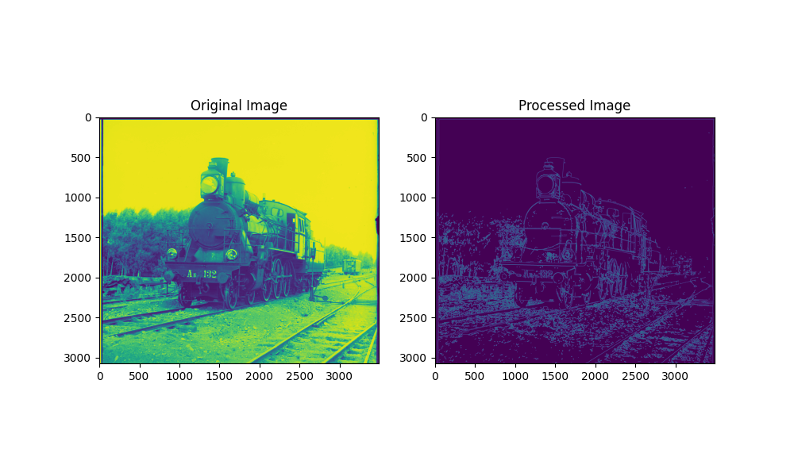
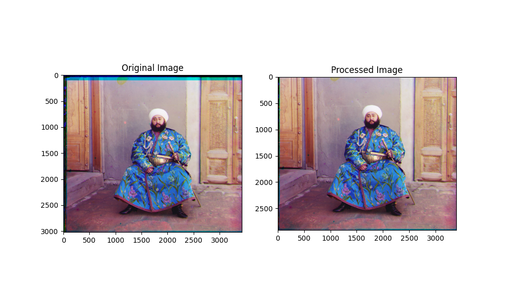

Project Description
 The earliest colored photos in the world dates back to as early as 1907, by a brilliant photographer
named Sergei Mikhailovich
Prokudin-Gorskii. His idea was to capture images through a red, a green, and a blue filter
respectively, in the hope that these images would be reconstructed into colored images in the
future.
The earliest colored photos in the world dates back to as early as 1907, by a brilliant photographer
named Sergei Mikhailovich
Prokudin-Gorskii. His idea was to capture images through a red, a green, and a blue filter
respectively, in the hope that these images would be reconstructed into colored images in the
future.
This project aims at reconstructing colored images from Prokudin-Gorskii's work. Given a set of grayscale images that consists of the photos taken through the filters, the goal is to align the channels in a way that would induce as little visual artifacts as possible.
Objective
Let's denote the two images we're trying to match as $A \in \mathcal{R}^{m \times n}$ and $B \in \mathcal{R}^{m \times n}$, where all elements in $A$ and $B$ reside in the range $[0, 1]$.
The goal is to find the best linear translation that would match the channels. Assume the channels are offset only by some linear translation (i.e., without rotation). In this project, the similarity of two images are characterized by the Normalized Cross Correlation (NCC) criteria.
$$\textrm{arg}\max_{\delta_i, \delta_j} \frac{\mathrm{vec}(A^{'}) \cdot \mathrm{vec}(B)}{\Vert A^{'} \Vert_2 \Vert B \Vert_2}$$
where
$$A^{'}_{i, j} = A_{i + \delta_i, j + \delta_j},\forall i \in [1, m], j \in [1, n]$$
Note that we assume the image matrix $A$ are infinitely zero-padded outside the borders.
Algorithm
The naive algorithm is to exhaustively search over all possible $\delta_i, \delta_j$. Since the channels likely won't be misaligned by a lot, the optimal solution $\delta_i^{*}, \delta_j^{*}$ would likely be small in the absolute value. Therefore, for low-resolution images, searching over a small range would also likely to yield the same result.
However, if the image is large, the exhaustive search approach would be highly inefficient. To improve the efficiency, we use the pyramid search strategy to speed up the process.
The implementation of the pyramid and search algorithm is recursive in this project. If the image is larger than some threshold, we apply Gaussian blur on the image, and then downsample the image to shrink the dimensions by half. We recursively call the pyramid and search function until the image is shrunk sufficiently. In each call, we search within a very small window (with a displacement in $[-2, 2]$). This allows us to first coarsely align the images and then fine-tune the displacement, and therefore reduce redundant computations. The final displacements are the weighted sum of the displacements on all levels of the pyramid.
Gallery
Go to the gallery.
Bells and Whistles
Edge Extraction
Since the variety of colors in an image can vary greatly, matching in the RGB space usually isn't ideal.
Instead, we perform matching in the feature space. In this project, we selected the edges as the features. Edge extraction is done using the OpenCV implementation of Canny algorithm.
Automatic cropping
The RGB images extracted from the original image by simply slicing it into three vertical subparts would have black or white edges. To remove them, we simply remove all rows that are all zeros or ones in any channel, which would imply they are along the borders.
In addition, since the channels are linearly translated during the matching process, the unmatched portion of the images would have incomplete information. These parts along the borders are also automatically removed based on the displacements.
Finally, since the borders tends to have the most visual artifacts, a constant ratio cropping is applied to keep only the center of the image to get rid of the residuals.
White balancing and Histogram Equalization
To make the images more photo realistic, white balancing and histogram equalization are performed after all operations above were completed.
White balancing is done in an naive approach: assume the brightest pixel in each channel as the reference point and linearly scale each channel such that the brightest pixel is white. Histogram equalization is done by taking the cumulative histogram of each channel and use it to map the value of each pixels.

This extra procedure works well for some, but not all, images. In the gallery, the images that went through these extra procedures are labeled.